Roofing blog
The American Roofing Blog
Straight answers about Utah roofs: repairs, replacements, insurance, materials and winter care.

Oct 16, 2026 · NewHow to Prevent Ice Dams on a Utah Roof

2026-09-10Roof Repair vs. Roof Replacement: How to Choose - American Roofing Company

2025-10-27Should You Get Metal Roofing in Utah? 3 Busted Myths - American Roofing Company
2024-01-05The Guide to Permits for Roof Replacements in Utah - American Roofing Company
2023-03-27Who Pays for Roof Repairs in a Condo? 8 Things to Consider - American Roofing Company
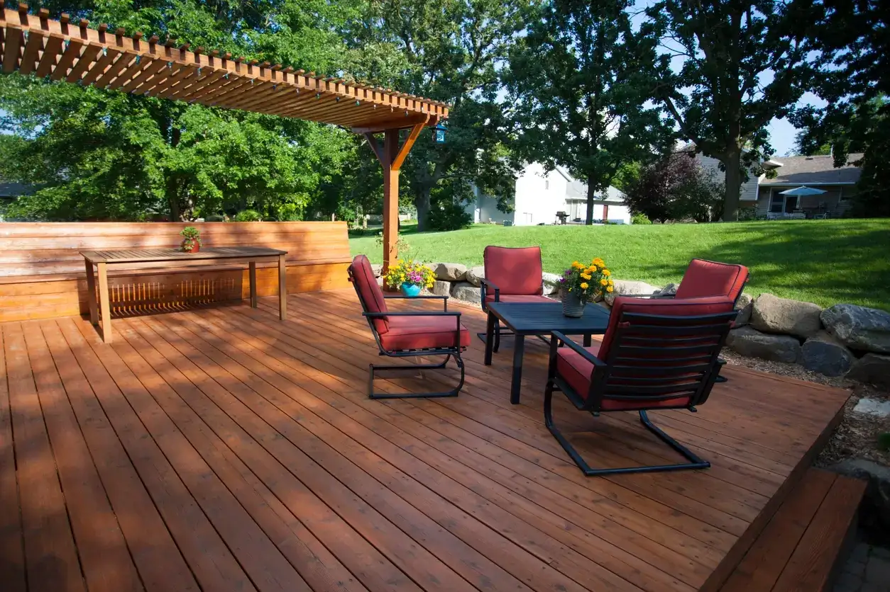
2023-03-06Top 24 Deck Builder Companies in Salt Lake City | American Roofing
![How Long Do Roofs Last in Utah? [Everything You Need to Know] - American Roofing Company](../assets/img/homes-in-utah.webp)
2023-01-25How Long Do Roofs Last in Utah? [Everything You Need to Know] - American Roofing Company
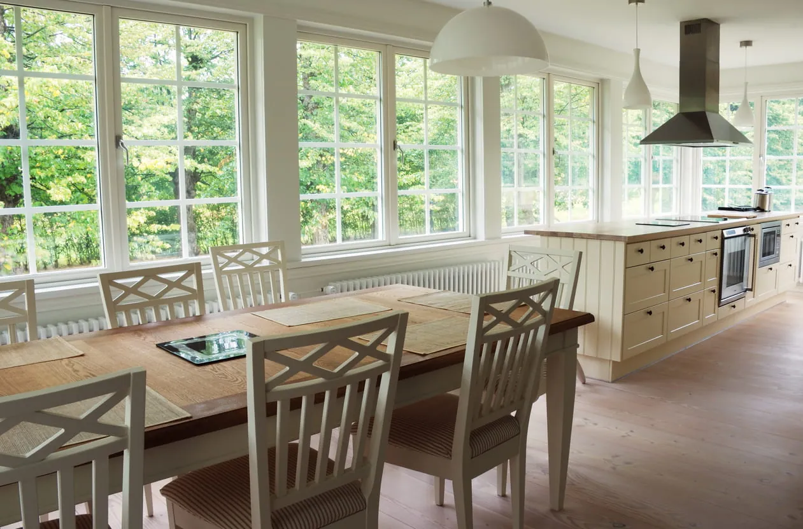
2023-01-20Top 25 Window Companies Near Salt Lake City
2022-12-07How Much Does a New Roof Cost in Utah? - American Roofing Company

2022-12-06Top Christmas Lights Installation Companies in Salt Lake City

2022-09-07What Is the Best Type of Flat Roof in Utah? - American Roofing Company
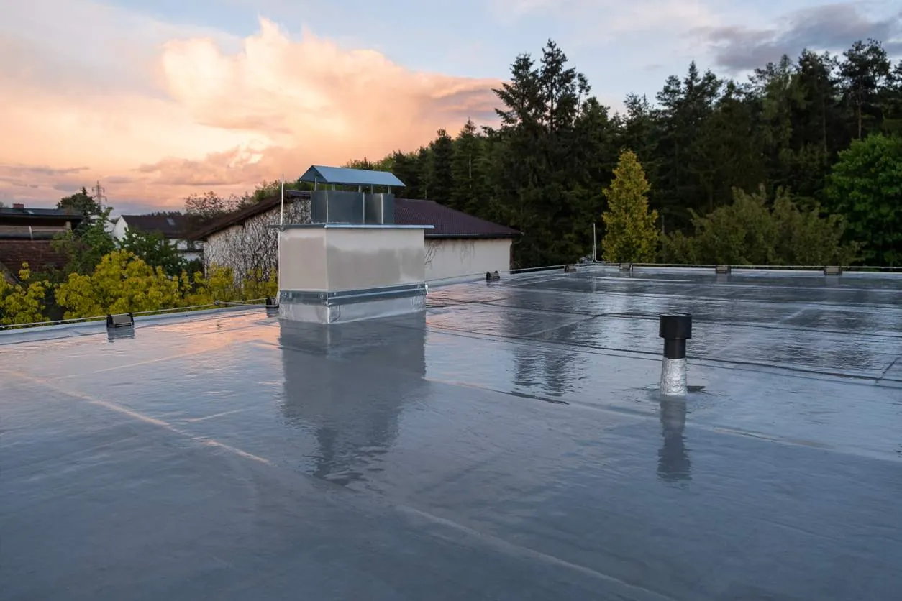
2022-09-01What Is the Lifespan of a Flat Roof in Utah? - American Roofing Company
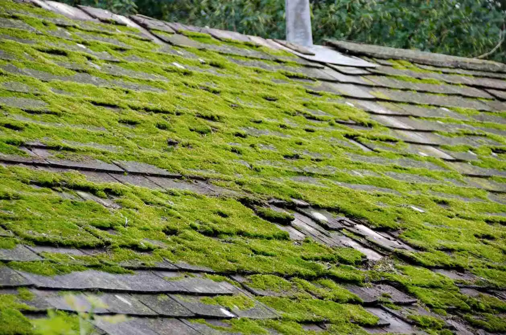
2022-08-12Homeowner’s Guide on Preventing Moss on the Roof - American Roofing Company

2022-08-05What You Need to Know about Roof Buckling - American Roofing Company

2022-07-22Commercial Roof Types to Consider | American Roofing Company

2022-07-08Can Hail Damage a New Roof? What to Know | American Roofing
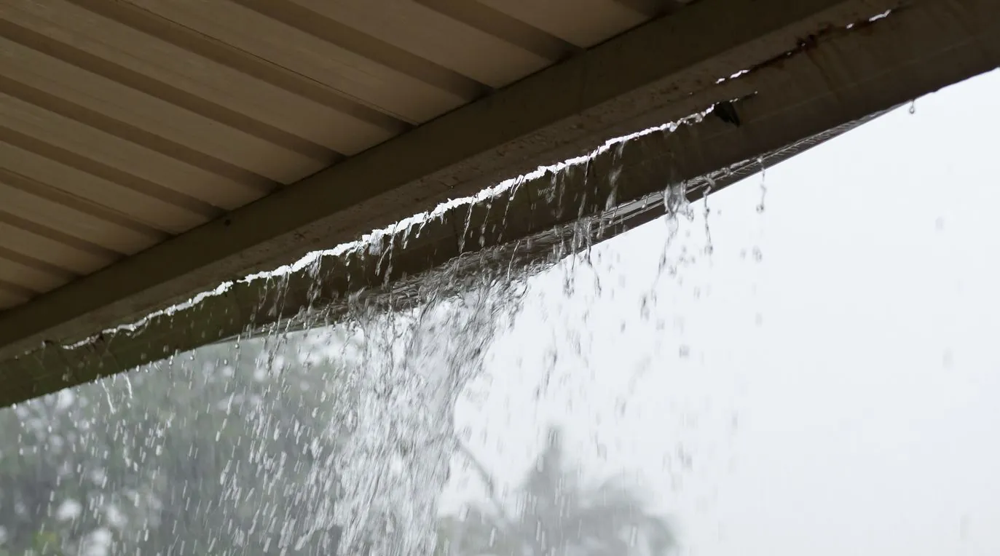
2022-06-206 FAQs About Repairing Gutter Leaks | American Roofing

2022-05-23Roof Anatomy 101: Roofing Terms Defined - American Roofing Company
2022-05-13The History of Roofing from Ancient Civilizations Through Today - American Roofing Company
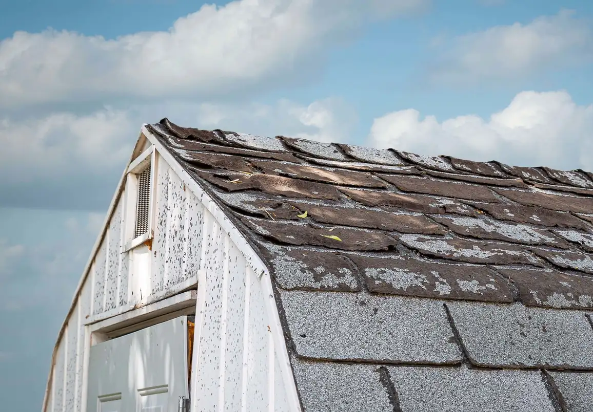
2022-04-22How to Shingle a Shed Roof [6 Steps] | American Roofing Company
2022-04-14How to Pick a Shingle Color [Your Guide] | American Roofing Company
2021-09-07How to Remove a Swamp Cooler [What You Need to Know] - American Roofing Company

2021-07-15Seasonal Roof Maintenance Checklist for Utah Homeowners - American Roofing Company

2021-07-15What Is the Best Way to Clean Gutters Safely? - American Roofing Company
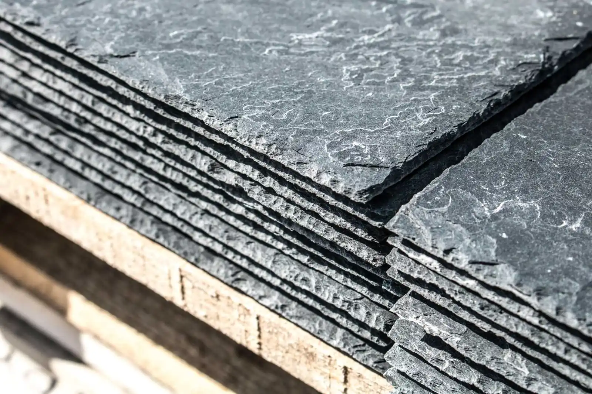
2021-06-24Roofing Felt: What It Is, Uses, Types, and More | American Roofing
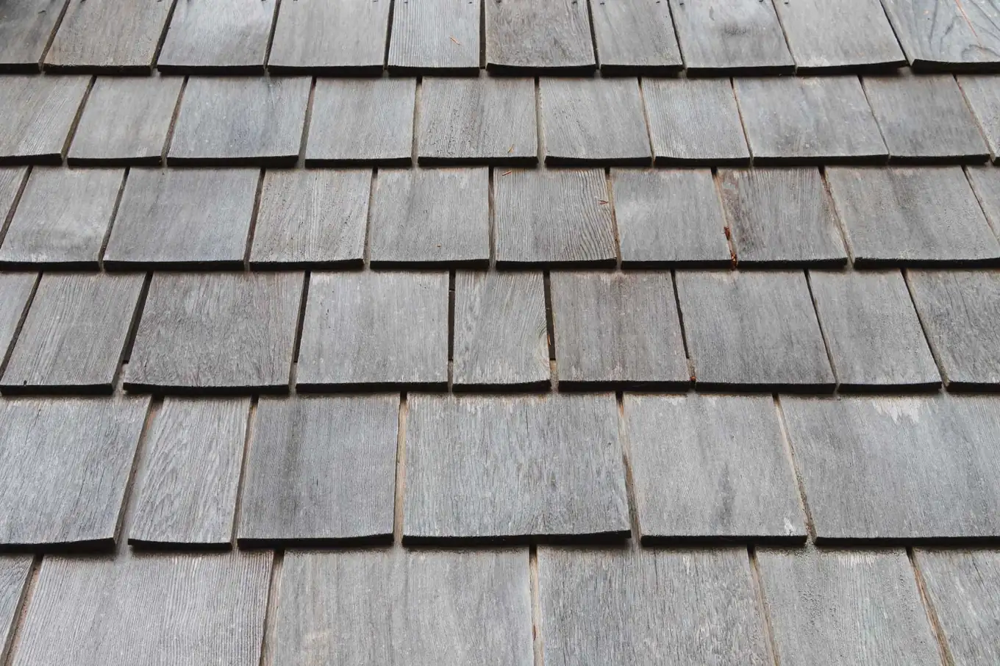
2021-06-17What Are Roof Shingles Made Of? | American Roofing Company

2021-05-13When Will Insurance Pay for a New Roof? | American Roofing Company
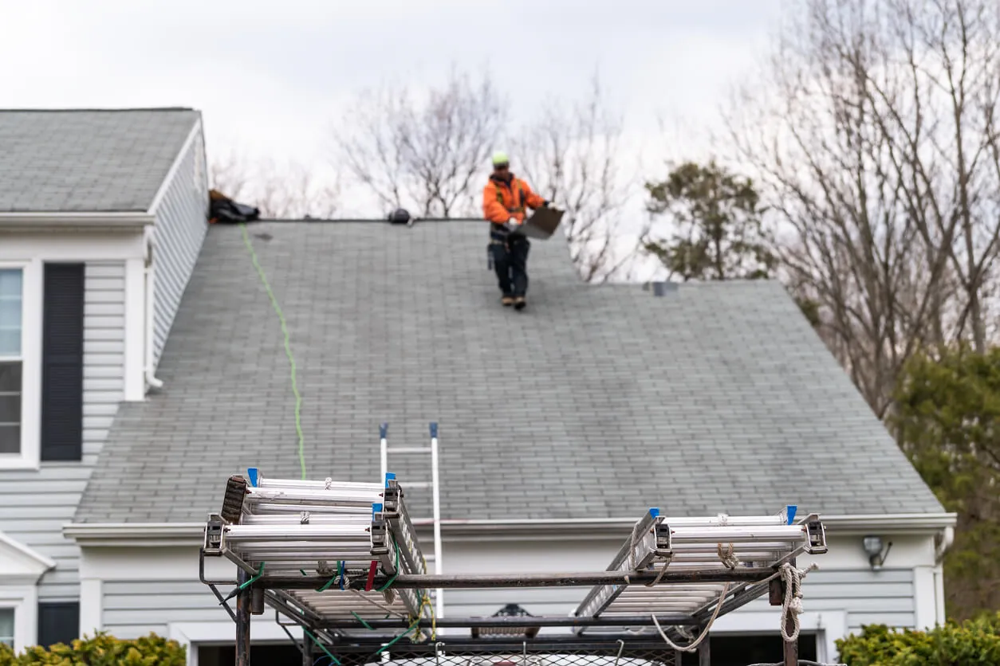
2021-05-06Can You Replace a Roof Without HOA Approval? | AMCO
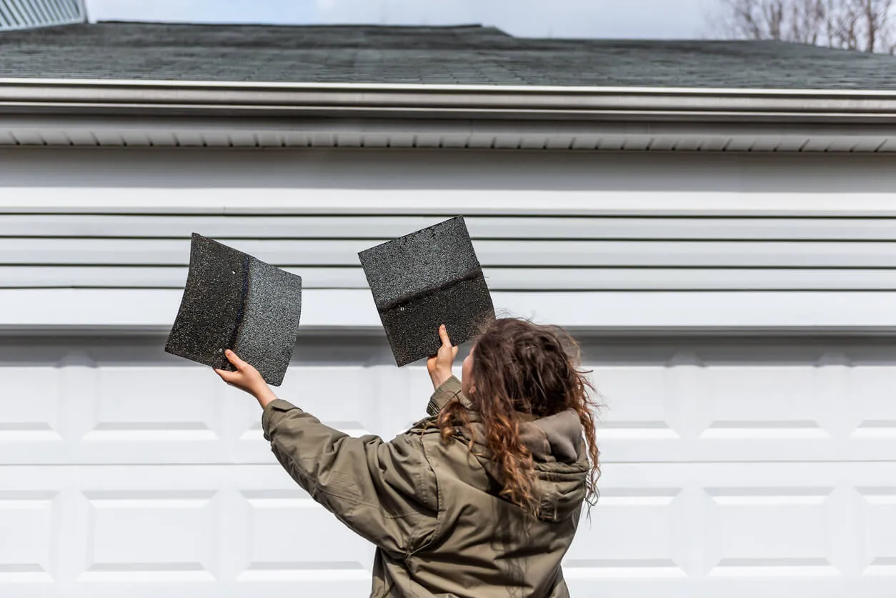
2021-04-22How to Recognize and Fix Roof Wind Damage | American Roofing
2021-04-15Storm Damage Roof and Repair Mythbusting | American Roofing
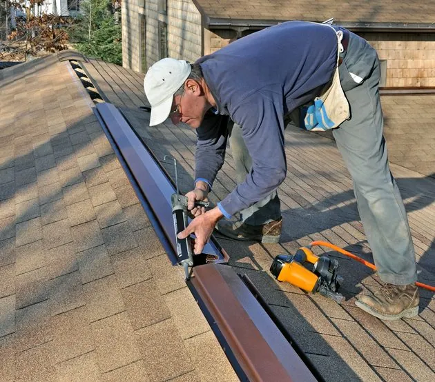
2014-02-20Everything You Need to Know about Ridge Vents | American Roofing Company

2014-02-20Here are a few common questions our customers have about American Roofing - American Roofing Company
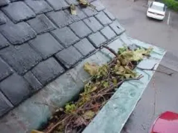
2014-02-204 Tips for Winter Roof Preparation after Summer is Over - American Roofing Company

Free estimates
Get a straight answer about your roof.
Free roof evaluation. We'll explain what we find, and if it can be repaired, we won't sell you a replacement.